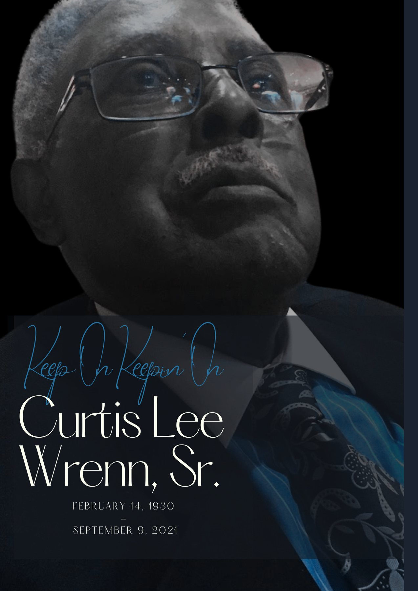
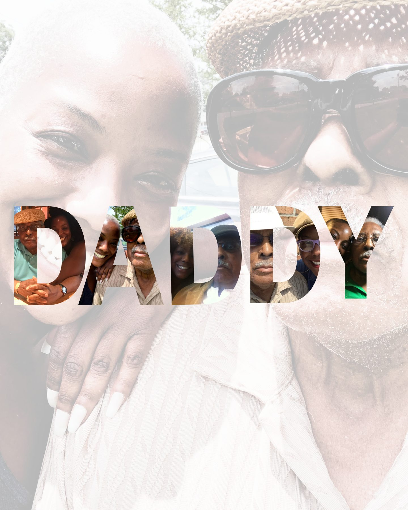
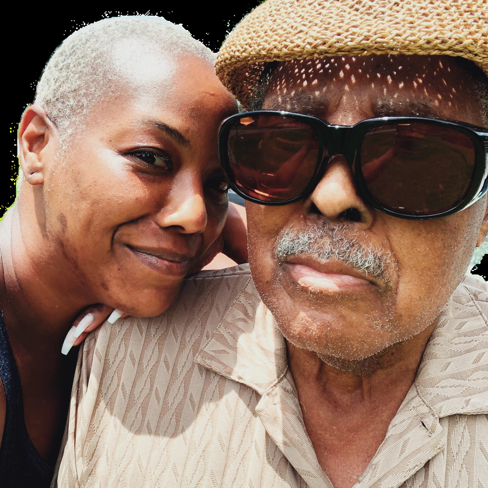
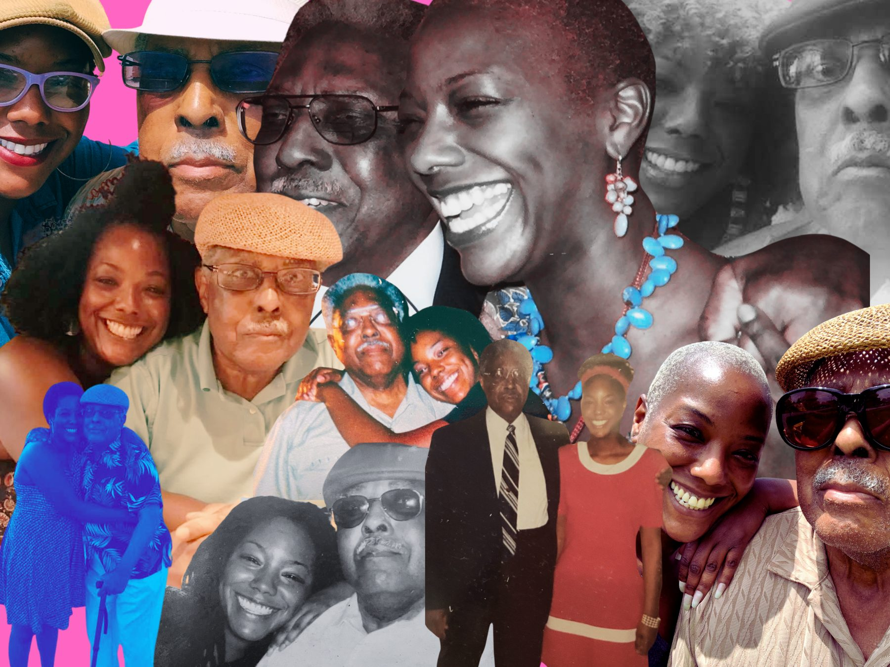
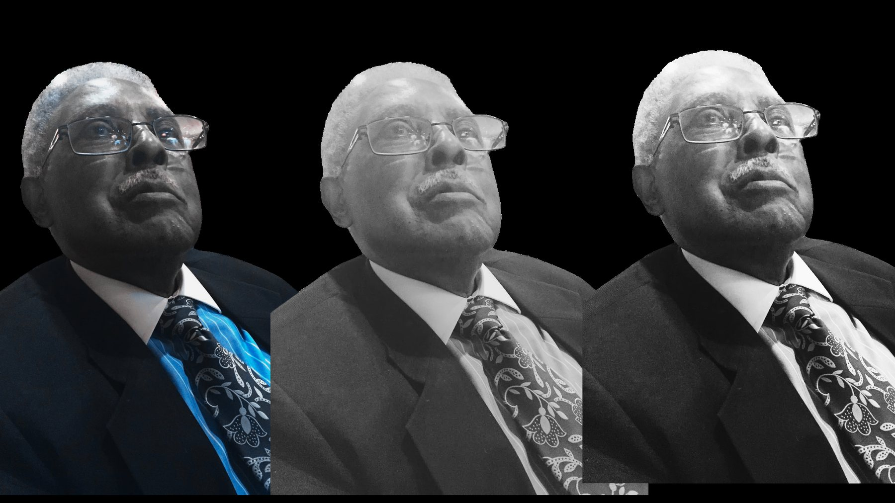
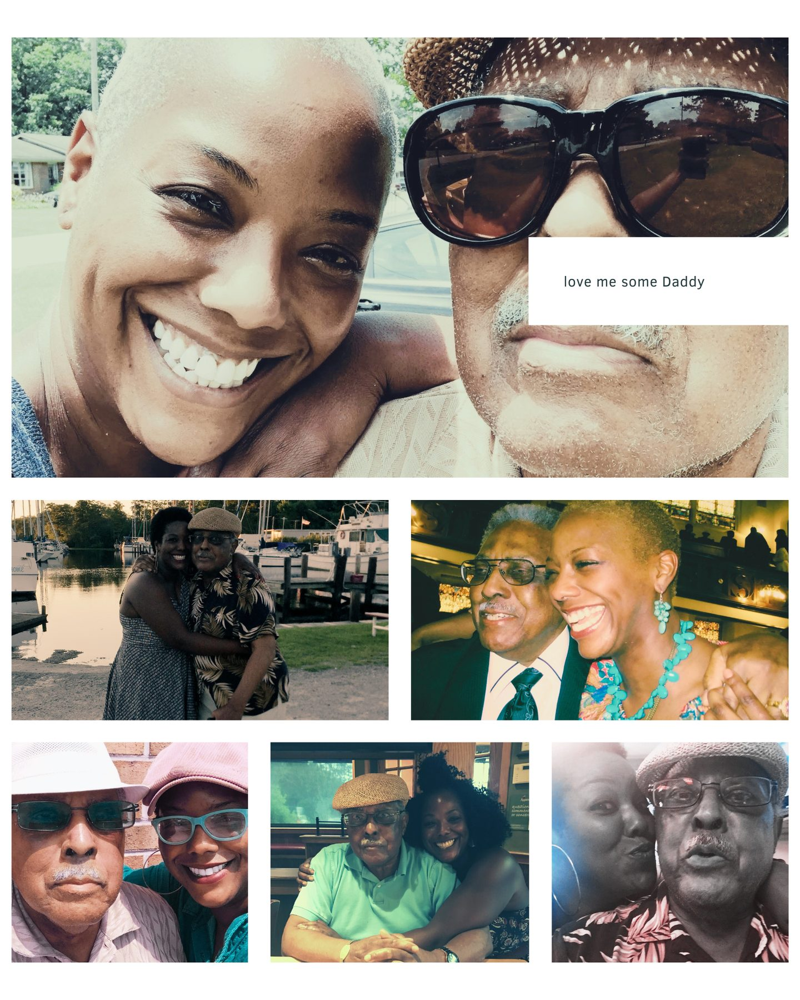

A voicemail he left me. October 6, 2009.
"Be good to yourself. Take care of one daughter. Love the world. Love yourself. Be good to yourself. Call me when you get a chance. Love you very much. Thank you."
— Curtis Lee Wrenn, Sr. · 1:38 p.m.

Keep On Keepin On

By Penny Wrenn
There is a specific kind of possessive that does not let go. Not my father, not the late, not patient in room 214. Pennys.dad. No apostrophe because the internet doesn't allow punctuation in domain names, and I find that absence fitting — ownership that doesn't require a mark. This is where he lives now. On my server. In my name. Still mine.
Curtis Lee Wrenn, Sr. was born on Valentine's Day, 1930, in a country that had not yet decided he was fully human. He outlived that country's refusal to see him. He became a man who left voicemails that sounded like blessings. Be good to yourself. Love the world. Love yourself. Not once — he said it twice in the same message, the way he said important things. As if the first time were for the record and the second were for you.
I am his daughter. Specifically, I am The Supplemental — the word I have given to the position I held throughout the years of his decline. Not the primary caregiver. Not the person with the healthcare proxy. Not the one who signed the forms or had official standing in the system that was managing his life. I was the one who called. The one who visited. The one who noticed things and had nowhere to put them. The one standing in the hallway, watching, without a lever to pull.
My father fell. When you are old and your mind is going, falling is not an accident. It is a verdict. The fall is the moment the system officially takes over, and the family officially steps back, and the paperwork begins. He woke up in a nursing home not knowing how he got there. At some point he asked for a copy of his own records. He was denied. He had never been declared legally incompetent. He had never been the subject of a guardianship. No court had removed his rights. No formal process had stripped him of standing. He was a man whose rights were legally intact — and when he asked to see his own file, the system said no. That is not a bureaucratic error. That is the system working as it was designed, assuming that a man in a facility with undocumented cognitive decline no longer needed to be treated as a person with the right to ask questions about his own care.
I read his paperwork. I have a journalism background. I knew how to read paperwork. What I found was that dementia had been managed — by nurses, in behavioral notes, in the careful language of a facility that had sold his family on memory care as a product — but never diagnosed as a medical condition requiring a care protocol, a rights review, a legal safeguard. The facility had both the services and the brochure. It did not have the clinical record that should have come first.
The only time the word dementia appeared in any official document about my father's care was on his death certificate.
I am a writer. I am a strategist. I spent twenty years helping institutions tell their stories — knowing which details matter, which language triggers action, which frame changes what an audience believes is possible. I turned that practice on my father's situation. I researched. I read the Lancet Commission. I read the federal GUIDE Model. I read patient rights statutes and proxy decision laws and nursing home admission agreements. I read all of it the way I should have been able to read his care record — with someone standing beside me who could explain what I was seeing.
There was no one. There is almost never anyone. That is the design failure.
So I started buying domain names. It is a very Penny Wrenn thing to do — to see a gap in the world and immediately stake a claim in it. Dementiadeservesbetter.com. Dementia.chat. Pennys.dad. The domains are a promise to my father that what happened to him will be useful to someone else. That his story will not disappear with him. That his mind — the mind that said love the world, love yourself and meant it, the mind that the disease took quietly before anyone named it — will be remembered not only by me, but by the system that failed to protect it.
He died on September 9, 2021. He was ninety-one years old. He was, until the end, someone who could still make you feel like the most important person in the room. That is not a small thing to lose. That is not a small thing to let pass without documentation.
This is the documentation.

"He was, until the end, someone who could still make you feel like the most important person in the room."
pennys.dad · Penny Wrenn

The only time dementia appeared in his care record was on his death certificate. This is what the disease does — it takes a specific mind, in a specific body, from a specific family — and the system let it happen without ever writing the word down.
dementia deserves better
From this site to the work it launched
Dementia Deserves Better is the advocacy ecosystem built in Curtis Wrenn's name. For families who are inside this right now. For the people standing in the hallway, the ones calling every Sunday, the ones who read the paperwork and found the gap. There is a place for you there.
Visit Dementia Deserves Better →